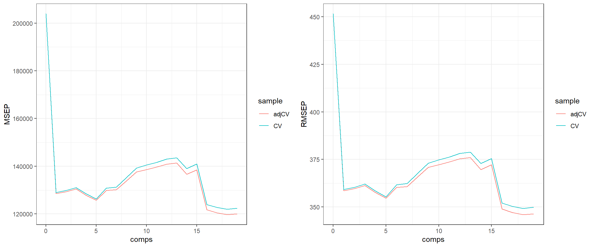
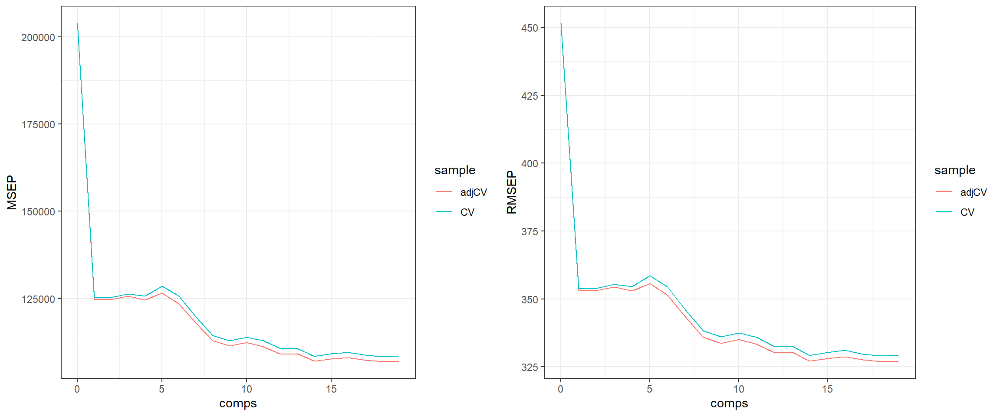
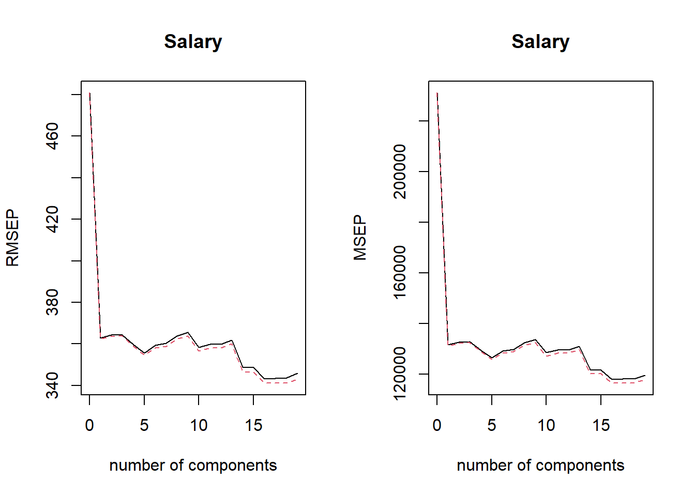
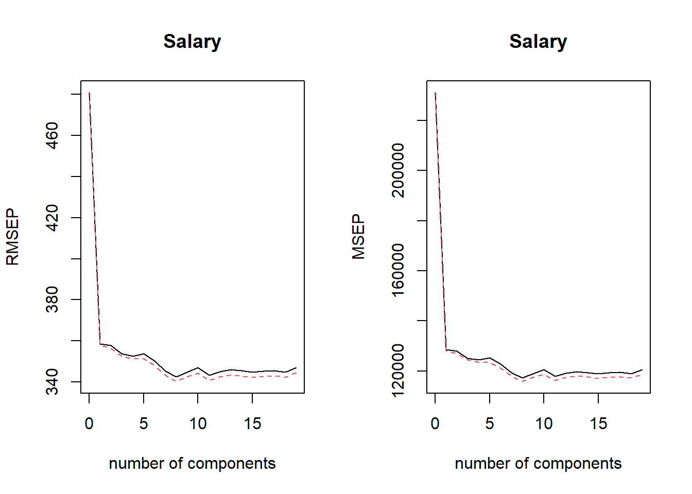
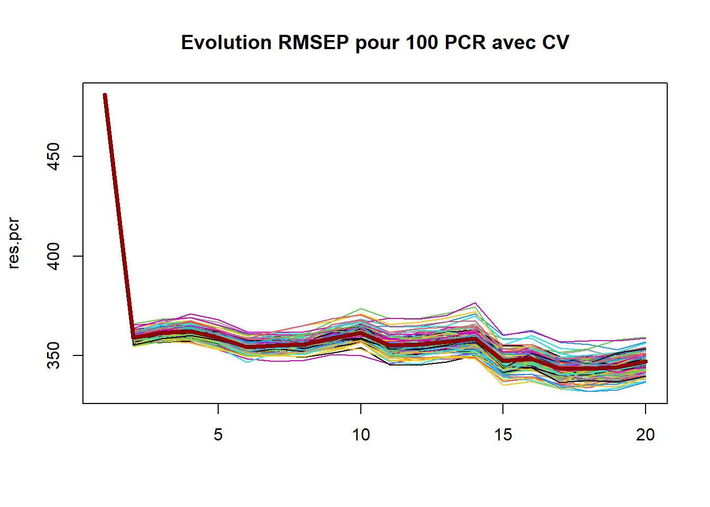
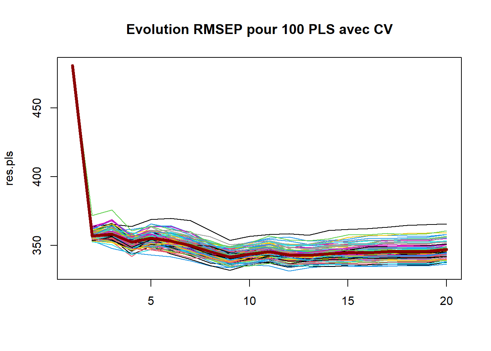
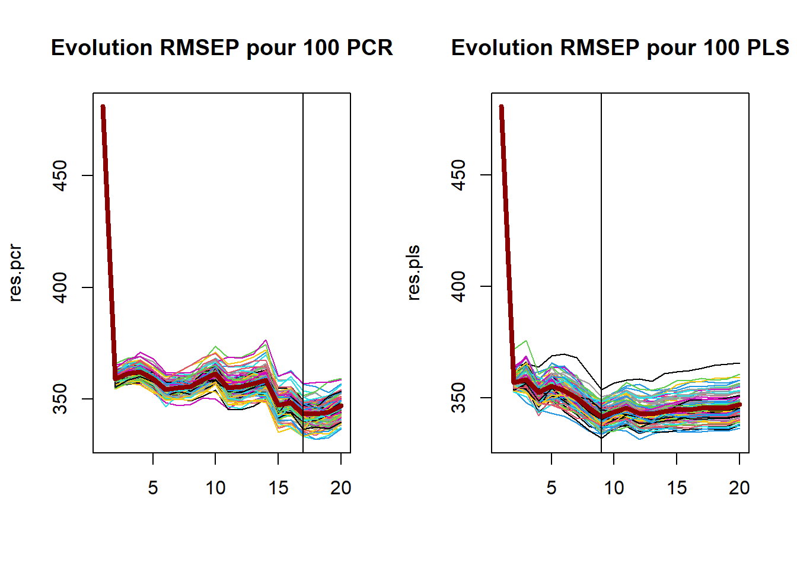

Code
# Données
library(ISLR) # Hitters data
library(dplyr) # manipulation des données
# Infrence
library(pls) ## PCR et PLS
# Plots
## ggplot
library(ggplot2)
library(gridExtra)Clément Poupelin
February 23, 2025
Dans l’analyse des données et la modélisation statistique, la régression linéaire classique peut être limitée lorsque les variables explicatives sont fortement corrélées (problème de colinéarité) ou lorsque leur nombre est supérieur au nombre d’observations (problème de haute dimensionnalité). Pour remédier à ces défis, des méthodes de réduction de dimensionnalité comme la Régression sur Composantes Principales (PCR) et la Régression des Moindres Carrés Partiels (PLS) sont utilisées.
Régression sur Composantes Principales (PCR) La PCR repose sur une Analyse en Composantes Principales (ACP) pour transformer les variables explicatives en nouvelles variables orthogonales appelées composantes principales. Seules les premières composantes, capturant le plus de variance, sont conservées dans la régression. Cette approche permet de réduire la multicolinéarité et d’éviter le sur-ajustement en limitant la complexité du modèle. Cependant, la PCR ne prend pas en compte la relation entre les variables explicatives et la variable réponse lors de la sélection des composantes.
Régression des Moindres Carrés Partiels (PLS) Contrairement à la PCR, la PLS cherche à maximiser la covariance entre les variables explicatives et la variable réponse. Elle construit des composantes latentes qui capturent non seulement la variance des variables explicatives mais aussi leur corrélation avec la variable à prédire. Cette méthode est souvent plus efficace que la PCR pour les problèmes de prédiction, car elle optimise directement la relation entre les prédicteurs et la réponse.
En résumé, la PCR est une approche basée sur la variance des prédicteurs, tandis que la PLS optimise la relation entre les prédicteurs et la réponse. Le choix entre ces deux méthodes dépend du contexte : la PCR est utile pour la réduction de dimensionnalité, tandis que la PLS est souvent plus performante pour la prédiction
my_validationplot <- function(mod, data) {
msep.cv <- MSEP(mod, estimate = c("CV", "adjCV"))
rmsep.cv <- RMSEP(mod, estimate = c("CV", "adjCV"))
x_msep <- c(msep.cv$val[1, , ], msep.cv$val[2, , ])
x_rmsep <- c(rmsep.cv$val[1, , ], rmsep.cv$val[2, , ])
y <- c(rep("CV", length(msep.cv$val[2, , ])), rep("adjCV", length(msep.cv$val[2, , ])))
z <- c(0:(ncol(data) - 1), 0:(ncol(data) - 1))
dt <- data.frame(x_msep, x_rmsep, y, z)
colnames(dt) <- c("MSEP", "RMSEP", "sample", "comps")
p.msep <- ggplot(dt, aes(x = comps, y = MSEP, col = sample)) + geom_line() +
theme_bw()
p.rmsep <- ggplot(dt, aes(x = comps, y = RMSEP, col = sample)) + geom_line() +
theme_bw()
return(list(MSEP = p.msep, RMSEP = p.rmsep))
}On étudie à nouveau le jeu de données Hitters disponible dans la libraire {ISLR} de R. Il s’agit d’un jeu de données de la Major League Baseball provenant des saisons de 1986 et 1987.
Le jeu de données possède 322 lignes/individus pour les différents joueurs et 20 variables.
Parmi les variables, on trouve les informations suivantes :
| AtBat | Number of times at bat in 1986 |
| Hits | Number of hits in 1986 |
| HmRun | Number of home runs in 1986 |
| Runs | Number of runs in 1986 |
| RBI | Number of runs batted in in 1986 |
| Walks | Number of walks in 1986 |
| Years | Number of years in the major leagues |
| CAtBat | Number of times at bat during his career |
| CHits | Number of hits during his career |
| CHmRun | Number of home runs during his career |
| CRuns | Number of runs during his career |
| CRBI | Number of runs batted in during his career |
| CWalks | Number of walks during his career |
| League | A factor with levels A and N indicating player's league at the end of 1986 |
| Division | A factor with levels E and W indicating player's division at the end of 1986 |
| PutOuts | Number of put outs in 1986 |
| Assists | Number of assists in 1986 |
| Errors | Number of errors in 1986 |
| Salary | 1987 annual salary on opening day in thousands of dollars |
| NewLeague | A factor with levels A and N indicating player's league at the beginning of 1987 |
Comme pour l’Exercice 1, on va commencer par se débarasser des variables manquantes.
Comme cela fait maintenant plusieurs fois que l’on fait affaire à ce jeu de données, on se passera des analyses descritpives faites en Exercice 1.
Ainsi, on va pouvoir tout de suite commencer par faire le découpage de notre jeu de données en échantillon train et test. Le jeu de données train contiendra 3/4 des individus sans valeurs manquantes de Hitters, tirés aléatoirement. Le reste du jeu de données composera l’échantillon test.
Data: X dimension: 197 19
Y dimension: 197 1
Fit method: svdpc
Number of components considered: 19
VALIDATION: RMSEP
Cross-validated using 10 random segments.
(Intercept) 1 comps 2 comps 3 comps 4 comps 5 comps 6 comps
CV 451.6 359.2 360.4 362.1 358.4 355.4 361.6
adjCV 451.6 358.6 359.6 361.3 357.6 354.6 360.3
7 comps 8 comps 9 comps 10 comps 11 comps 12 comps 13 comps
CV 362.3 367.7 373.1 374.9 376.3 378.2 378.9
adjCV 360.8 365.8 370.9 372.2 373.7 375.4 376.0
14 comps 15 comps 16 comps 17 comps 18 comps 19 comps
CV 372.9 375.5 352 350.3 349.2 349.8
adjCV 369.6 372.2 349 347.1 345.9 346.4
TRAINING: % variance explained
1 comps 2 comps 3 comps 4 comps 5 comps 6 comps 7 comps 8 comps
X 38.57 60.46 71.0 79.17 84.43 88.90 92.26 95.1
Salary 39.51 40.48 40.6 42.04 43.04 44.32 45.36 45.8
9 comps 10 comps 11 comps 12 comps 13 comps 14 comps 15 comps
X 96.48 97.43 98.12 98.70 99.18 99.5 99.75
Salary 45.81 47.70 47.71 48.14 48.26 51.2 51.55
16 comps 17 comps 18 comps 19 comps
X 99.91 99.97 99.99 100.00
Salary 57.09 58.10 58.89 59.19On peut maintenant visualiser l’évolution du MSEP et RMSEP enfonction du nombre de composantes gardées.

On peut voir courbe proche entre CV et adjCV avec une valeur minimum qui semble se trouver pour 6 composantes.
Et on petut alors récupérer le nombre de composantes à garder qui minimsent le MSEP et RMSEP.
Data: X dimension: 197 19
Y dimension: 197 1
Fit method: kernelpls
Number of components considered: 19
VALIDATION: RMSEP
Cross-validated using 10 random segments.
(Intercept) 1 comps 2 comps 3 comps 4 comps 5 comps 6 comps
CV 451.6 353.8 354.0 355.4 354.6 358.6 354.5
adjCV 451.6 353.3 353.1 354.5 353.0 355.7 351.3
7 comps 8 comps 9 comps 10 comps 11 comps 12 comps 13 comps
CV 346.0 338.3 336.1 337.5 335.9 332.6 332.7
adjCV 343.4 336.0 333.7 335.2 333.3 330.3 330.4
14 comps 15 comps 16 comps 17 comps 18 comps 19 comps
CV 329.2 330.3 331.1 329.8 329.1 329.4
adjCV 327.1 328.1 328.7 327.6 326.9 327.2
TRAINING: % variance explained
1 comps 2 comps 3 comps 4 comps 5 comps 6 comps 7 comps 8 comps
X 38.35 51.49 65.93 72.1 76.66 83.61 87.75 89.94
Salary 41.91 45.71 47.66 49.8 52.71 54.18 55.37 56.92
9 comps 10 comps 11 comps 12 comps 13 comps 14 comps 15 comps
X 93.10 95.65 96.66 97.49 98.39 98.58 99.05
Salary 57.52 57.78 58.24 58.40 58.52 58.81 58.88
16 comps 17 comps 18 comps 19 comps
X 99.41 99.74 99.99 100.00
Salary 58.97 59.05 59.09 59.19On peut maintenant visualiser l’évolution du MSEP et RMSEP enfonction du nombre de composantes gardées.

On peut voir courbe proche entre CV et adjCV avec une valeur minimum qui semble se trouver pour 6 composantes.
Et on petut alors récupérer le nombre de composantes à garder qui minimsent le MSEP et RMSEP.
On va calculer le RMSEP calculé à partir de la prédiction pour l’échantillon test.
hat_Hitters_test_mod_pcr <- predict(mod_pcr, Hitters_test, ncomp = (which.min(RMSEP(
mod_pcr, estimate = c("CV")
)$val["CV", , ]) - 1))
rmsep_mod_pcr <- sqrt(mean((
hat_Hitters_test_mod_pcr - Hitters_test$Salary
) ** 2))
hat_df_test_salary.pls <- predict(mod_pls, Hitters_test, ncomp = (which.min(RMSEP(
mod_pls, estimate = c("CV")
)$val["CV", , ]) - 1))
rmsep_mod_pls <- sqrt(mean((
hat_df_test_salary.pls - Hitters_test$Salary
) ** 2))─ Session info ───────────────────────────────────────────────────────────────
setting value
version R version 4.2.1 (2022-06-23 ucrt)
os Windows 10 x64 (build 22631)
system x86_64, mingw32
ui RTerm
language (EN)
collate French_France.utf8
ctype French_France.utf8
tz Europe/Paris
date 2025-02-23
pandoc 3.2 @ C:/Program Files/RStudio/resources/app/bin/quarto/bin/tools/ (via rmarkdown)
─ Packages ───────────────────────────────────────────────────────────────────
package * version date (UTC) lib source
dplyr * 1.1.4 2023-11-17 [1] CRAN (R 4.2.3)
forcats * 1.0.0 2023-01-29 [1] CRAN (R 4.2.2)
ggplot2 * 3.5.1 2024-04-23 [1] CRAN (R 4.2.3)
gridExtra * 2.3 2017-09-09 [1] CRAN (R 4.2.1)
ISLR * 1.4 2021-09-15 [1] CRAN (R 4.2.3)
kableExtra * 1.4.0 2024-01-24 [1] CRAN (R 4.2.3)
lubridate * 1.9.3 2023-09-27 [1] CRAN (R 4.2.3)
pls * 2.8-3 2023-11-17 [1] CRAN (R 4.2.3)
purrr * 1.0.2 2023-08-10 [1] CRAN (R 4.2.3)
readr * 2.1.5 2024-01-10 [1] CRAN (R 4.2.3)
stringr * 1.5.1 2023-11-14 [1] CRAN (R 4.2.3)
tibble * 3.2.1 2023-03-20 [1] CRAN (R 4.2.3)
tidyr * 1.3.1 2024-01-24 [1] CRAN (R 4.2.3)
tidyverse * 2.0.0 2023-02-22 [1] CRAN (R 4.2.2)
[1] C:/Users/cleme/AppData/Local/R/win-library/4.2
[2] C:/Program Files/R/R-4.2.1/library
──────────────────────────────────────────────────────────────────────────────[1] 263 20[1] 197 20[1] 66 20# Question 1.5 --------------------------------------------------------------
# faire une selec forwise-stepwise avec critere BIC sur train puis rmsep sur test
mod0=lm(Salary~0, data=df_train)
mod_full=lm(Salary~., data=df_train)
mod.step = step(mod0, scope = formula(mod_full), trace = FALSE, direction = "both", k = log(n))Error in log(n): argument non numérique pour une fonction mathématiqueError in summary(mod.step): objet 'mod.step' introuvableError in predict(mod.step, df_test): objet 'mod.step' introuvableError in mean((hat_df_test_mod.step - df_test$Salary)^2): objet 'hat_df_test_mod.step' introuvableError in eval(expr, envir, enclos): objet 'rmsep_mod.step' introuvableData: X dimension: 197 19
Y dimension: 197 1
Fit method: svdpc
Number of components considered: 19
VALIDATION: RMSEP
Cross-validated using 10 random segments.
(Intercept) 1 comps 2 comps 3 comps 4 comps 5 comps 6 comps
CV 480.9 362.8 364.2 364.4 359.7 355.5 359.4
adjCV 480.9 362.3 363.6 363.8 358.9 354.6 358.2
7 comps 8 comps 9 comps 10 comps 11 comps 12 comps 13 comps
CV 360.2 363.8 365.5 358.3 360.0 359.9 361.7
adjCV 358.9 362.4 363.9 356.5 358.2 358.1 360.0
14 comps 15 comps 16 comps 17 comps 18 comps 19 comps
CV 348.9 348.6 343.3 343.5 343.6 345.8
adjCV 346.7 346.5 341.2 341.2 341.2 343.3
TRAINING: % variance explained
1 comps 2 comps 3 comps 4 comps 5 comps 6 comps 7 comps 8 comps
X 40.51 60.57 71.15 79.89 85.15 89.29 92.85 95.30
Salary 45.77 45.85 46.38 47.72 49.65 50.36 50.76 50.76
9 comps 10 comps 11 comps 12 comps 13 comps 14 comps 15 comps
X 96.53 97.46 98.13 98.74 99.16 99.51 99.77
Salary 51.02 53.82 54.07 54.25 54.60 58.06 58.32
16 comps 17 comps 18 comps 19 comps
X 99.90 99.97 99.99 100.00
Salary 59.87 60.62 61.27 61.27
, , 1 comps
Salary
AtBat 26.854472
Hits 26.349011
HmRun 24.171415
Runs 25.846286
RBI 29.459770
Walks 25.548791
Years 30.927868
CAtBat 37.133303
CHits 37.361129
CHmRun 35.836624
CRuns 38.290782
CRBI 37.990129
CWalks 35.532417
LeagueN -6.506781
DivisionW -6.460451
PutOuts 12.180892
Assists 3.897012
Errors 4.353903
NewLeagueN -6.135108
, , 2 comps
Salary
AtBat 29.333553
Hits 28.794921
HmRun 25.648648
Runs 28.310510
RBI 31.424972
Walks 27.206460
Years 28.926963
CAtBat 35.664424
CHits 35.970834
CHmRun 34.694334
CRuns 36.992021
CRBI 36.625681
CWalks 34.160311
LeagueN -6.963243
DivisionW -6.620092
PutOuts 13.162983
Assists 5.085790
Errors 5.743577
NewLeagueN -6.512359
, , 3 comps
Salary
AtBat 30.978109
Hits 30.116447
HmRun 20.336701
Runs 27.155811
RBI 29.335421
Walks 27.950677
Years 29.935424
CAtBat 37.586247
CHits 37.835850
CHmRun 32.900245
CRuns 38.144713
CRBI 36.954979
CWalks 35.059759
LeagueN 6.548067
DivisionW -6.942130
PutOuts 14.387197
Assists 14.678390
Errors 15.427186
NewLeagueN 7.075892
, , 4 comps
Salary
AtBat 29.520862
Hits 29.000181
HmRun 31.597403
Runs 29.026827
RBI 36.231434
Walks 32.404842
Years 26.080137
CAtBat 33.710392
CHits 34.178113
CHmRun 37.369031
CRuns 35.351888
CRBI 37.332692
CWalks 34.488907
LeagueN 24.033667
DivisionW -10.089502
PutOuts 26.571953
Assists -7.543320
Errors -2.246405
NewLeagueN 24.653697
, , 5 comps
Salary
AtBat 27.694268
Hits 29.646194
HmRun 25.730261
Runs 33.481790
RBI 33.235304
Walks 37.877679
Years 24.820145
CAtBat 32.238744
CHits 33.201307
CHmRun 33.599843
CRuns 37.075568
CRBI 33.728773
CWalks 38.302157
LeagueN 24.734546
DivisionW -73.675797
PutOuts 11.097175
Assists -6.114206
Errors -7.340447
NewLeagueN 23.574869
, , 6 comps
Salary
AtBat 25.273285
Hits 25.819565
HmRun 16.169143
Runs 28.421368
RBI 26.169617
Walks 40.205973
Years 26.395457
CAtBat 32.797369
CHits 33.780569
CHmRun 30.483180
CRuns 36.843164
CRBI 33.242844
CWalks 40.029970
LeagueN 17.581534
DivisionW -82.399864
PutOuts 51.909973
Assists -3.241560
Errors -4.425967
NewLeagueN 17.212353
, , 7 comps
Salary
AtBat 27.977563
Hits 30.025511
HmRun -1.166145
Runs 36.724811
RBI 15.573862
Walks 61.204572
Years 25.788362
CAtBat 33.071120
CHits 34.127110
CHmRun 22.814001
CRuns 39.257148
CRBI 29.517381
CWalks 47.866368
LeagueN 16.895528
DivisionW -74.763437
PutOuts 48.229118
Assists -4.505340
Errors -18.631510
NewLeagueN 18.148813
, , 8 comps
Salary
AtBat 28.894779
Hits 31.269987
HmRun -2.117039
Runs 36.992026
RBI 15.722128
Walks 59.537377
Years 26.310089
CAtBat 33.512949
CHits 34.702753
CHmRun 22.128929
CRuns 39.401350
CRBI 29.562126
CWalks 46.851897
LeagueN 16.816210
DivisionW -74.844194
PutOuts 48.383456
Assists -4.797926
Errors -19.560821
NewLeagueN 18.396900
, , 9 comps
Salary
AtBat 31.588787
Hits 28.053736
HmRun 7.083675
Runs 28.472560
RBI 18.929344
Walks 56.701587
Years 21.787342
CAtBat 32.114883
CHits 31.268723
CHmRun 29.699273
CRuns 36.938402
CRBI 31.466240
CWalks 47.987748
LeagueN 18.648360
DivisionW -74.494016
PutOuts 51.019658
Assists 31.089710
Errors -50.830829
NewLeagueN 18.895451
, , 10 comps
Salary
AtBat 49.366949
Hits 56.945636
HmRun -55.944625
Runs 34.275461
RBI -9.144111
Walks 30.921233
Years -96.415955
CAtBat 14.681773
CHits 25.801160
CHmRun 135.260541
CRuns 51.042755
CRBI 80.319924
CWalks 46.306896
LeagueN 44.447574
DivisionW -75.492297
PutOuts 50.925897
Assists 17.200828
Errors -42.036656
NewLeagueN -11.590862
, , 11 comps
Salary
AtBat 56.836309
Hits 59.598129
HmRun -78.166380
Runs -1.486379
RBI 21.689129
Walks 51.048130
Years -92.608432
CAtBat 10.927660
CHits 24.000140
CHmRun 143.663268
CRuns 37.708144
CRBI 92.380904
CWalks 35.945707
LeagueN 23.954772
DivisionW -77.516613
PutOuts 45.938939
Assists 12.914266
Errors -40.169010
NewLeagueN 4.763255
, , 12 comps
Salary
AtBat 55.347029
Hits 55.674880
HmRun -70.702147
Runs 11.058391
RBI 7.478159
Walks 43.670028
Years -105.439583
CAtBat 11.838445
CHits 25.367169
CHmRun 149.102001
CRuns 45.162903
CRBI 90.774398
CWalks 38.953637
LeagueN -13.276625
DivisionW -78.201094
PutOuts 46.618093
Assists 14.620874
Errors -39.060853
NewLeagueN 43.037827
, , 13 comps
Salary
AtBat 38.421707
Hits 53.918821
HmRun -67.263177
Runs -8.469744
RBI 40.386940
Walks 39.097928
Years -163.432940
CAtBat 32.659484
CHits 55.742749
CHmRun 98.992985
CRuns 70.353720
CRBI 90.929778
CWalks 61.228717
LeagueN -12.522949
DivisionW -76.066629
PutOuts 47.064574
Assists 12.674980
Errors -41.573517
NewLeagueN 39.637213
, , 14 comps
Salary
AtBat -66.550588
Hits -20.213068
HmRun -66.339828
Runs 76.120546
RBI 43.287033
Walks 135.625420
Years -184.350168
CAtBat 78.872226
CHits 150.229310
CHmRun 105.635149
CRuns 114.000596
CRBI 157.542071
CWalks -196.022740
LeagueN -2.180342
DivisionW -78.940597
PutOuts 49.088085
Assists 45.725246
Errors -52.227274
NewLeagueN 30.622401
, , 15 comps
Salary
AtBat -121.459780
Hits -23.002074
HmRun -104.458650
Runs 126.565793
RBI 98.101331
Walks 113.753579
Years -171.211964
CAtBat 59.519948
CHits 131.168938
CHmRun 112.956111
CRuns 110.476793
CRBI 161.475074
CWalks -173.432411
LeagueN -4.865856
DivisionW -74.502925
PutOuts 53.837079
Assists 58.553401
Errors -54.760750
NewLeagueN 35.701506
, , 16 comps
Salary
AtBat -328.08385
Hits 250.93610
HmRun -34.58653
Runs 53.54866
RBI 19.59952
Walks 147.05938
Years -157.02262
CAtBat 18.31693
CHits 172.63981
CHmRun 117.45729
CRuns 61.33616
CRBI 190.78503
CWalks -173.15364
LeagueN -17.29380
DivisionW -74.85403
PutOuts 56.93537
Assists 73.15221
Errors -52.93703
NewLeagueN 44.86176
, , 17 comps
Salary
AtBat -351.55177
Hits 292.17572
HmRun -52.72531
Runs -14.83650
RBI 66.80566
Walks 163.83242
Years -132.13606
CAtBat -31.92205
CHits 156.06779
CHmRun 215.40176
CRuns 301.02633
CRBI -50.05894
CWalks -227.25468
LeagueN -13.50245
DivisionW -67.27012
PutOuts 63.98341
Assists 73.34561
Errors -52.83522
NewLeagueN 42.24517
, , 18 comps
Salary
AtBat -288.70379
Hits 266.95959
HmRun -21.34636
Runs -40.87854
RBI 34.80951
Walks 154.59900
Years -76.13620
CAtBat -435.82608
CHits 170.25965
CHmRun 75.55242
CRuns 527.01922
CRBI 195.52997
CWalks -230.84672
LeagueN -13.03671
DivisionW -64.50601
PutOuts 62.00105
Assists 79.54987
Errors -52.31389
NewLeagueN 45.43185
, , 19 comps
Salary
AtBat -281.30006
Hits 253.50186
HmRun -24.77878
Runs -33.71295
RBI 38.63129
Walks 151.76043
Years -75.83429
CAtBat -479.63750
CHits 257.56892
CHmRun 94.05591
CRuns 489.46102
CRBI 161.92491
CWalks -218.86125
LeagueN -12.18060
DivisionW -64.12921
PutOuts 61.82955
Assists 80.63960
Errors -53.17173
NewLeagueN 44.71078[1] 343.303616 comps
17 Data: X dimension: 197 19
Y dimension: 197 1
Fit method: kernelpls
Number of components considered: 19
VALIDATION: RMSEP
Cross-validated using 10 random segments.
(Intercept) 1 comps 2 comps 3 comps 4 comps 5 comps 6 comps
CV 480.9 358.5 357.8 353.7 352.7 353.8 350.3
adjCV 480.9 358.0 356.2 352.7 351.3 351.4 348.0
7 comps 8 comps 9 comps 10 comps 11 comps 12 comps 13 comps
CV 345.3 342.5 344.9 347.1 343.3 345.0 346.1
adjCV 343.3 340.3 342.7 344.4 340.9 342.6 343.5
14 comps 15 comps 16 comps 17 comps 18 comps 19 comps
CV 345.5 344.8 345.3 345.7 344.9 347.1
adjCV 342.9 342.3 342.8 343.1 342.4 344.5
TRAINING: % variance explained
1 comps 2 comps 3 comps 4 comps 5 comps 6 comps 7 comps 8 comps
X 40.40 48.72 61.75 72.99 77.54 84.95 89.01 90.49
Salary 47.51 51.90 53.48 55.13 57.67 58.38 58.99 59.99
9 comps 10 comps 11 comps 12 comps 13 comps 14 comps 15 comps
X 93.83 94.97 96.10 97.86 98.49 98.72 99.10
Salary 60.15 60.51 60.81 60.92 61.01 61.17 61.22
16 comps 17 comps 18 comps 19 comps
X 99.52 99.79 99.99 100.00
Salary 61.24 61.26 61.27 61.27
, , 1 comps
Salary
AtBat 26.9353756
Hits 29.0914017
HmRun 21.5813895
Runs 28.4189606
RBI 30.1156112
Walks 31.0681581
Years 26.2379015
CAtBat 36.1229141
CHits 37.9113655
CHmRun 37.4079931
CRuns 39.5445512
CRBI 39.1182351
CWalks 34.7580902
LeagueN -0.3538253
DivisionW -16.0742750
PutOuts 17.8380872
Assists 3.7400855
Errors 1.2864800
NewLeagueN 0.4454052
, , 2 comps
Salary
AtBat 19.8233405
Hits 39.2961212
HmRun 0.3623952
Runs 37.3164931
RBI 27.5572930
Walks 57.7728412
Years -4.0247254
CAtBat 27.5421019
CHits 39.2468739
CHmRun 45.0188839
CRuns 44.9073707
CRBI 43.9553483
CWalks 26.2578367
LeagueN 30.4933346
DivisionW -69.6016504
PutOuts 46.5242570
Assists 2.3099920
Errors -19.3446993
NewLeagueN 33.9449685
, , 3 comps
Salary
AtBat -3.037829
Hits 38.411405
HmRun -27.771874
Runs 32.777154
RBI 15.671191
Walks 65.943071
Years -25.771207
CAtBat 27.872559
CHits 51.591750
CHmRun 63.088518
CRuns 60.202210
CRBI 59.989673
CWalks 17.376764
LeagueN 18.349990
DivisionW -92.750869
PutOuts 51.838510
Assists 5.622295
Errors -40.244363
NewLeagueN 25.141098
, , 4 comps
Salary
AtBat -19.38728
Hits 57.46942
HmRun -54.64517
Runs 42.85148
RBI 16.70187
Walks 84.15661
Years -74.43326
CAtBat 17.98770
CHits 61.92724
CHmRun 84.12405
CRuns 74.20679
CRBI 76.43975
CWalks -12.57745
LeagueN -4.85374
DivisionW -103.58380
PutOuts 59.78793
Assists 26.98258
Errors -49.99876
NewLeagueN 8.51758
, , 5 comps
Salary
AtBat -73.7227204
Hits 82.7457469
HmRun -95.5746723
Runs 40.8414896
RBI 24.0074687
Walks 96.5482302
Years -158.2133932
CAtBat 9.1105255
CHits 97.6294411
CHmRun 142.4006485
CRuns 112.5068728
CRBI 126.4148329
CWalks -78.6915093
LeagueN -0.2756901
DivisionW -69.9480646
PutOuts 62.6367002
Assists 63.8103365
Errors -55.1459097
NewLeagueN 28.5507885
, , 6 comps
Salary
AtBat -100.4713814
Hits 90.5896473
HmRun -86.3779566
Runs 43.3738605
RBI 39.2909203
Walks 98.9001654
Years -183.1740922
CAtBat 0.8231578
CHits 107.3328161
CHmRun 161.6217181
CRuns 123.7708948
CRBI 140.6508642
CWalks -108.2937029
LeagueN -3.1651519
DivisionW -65.4156052
PutOuts 58.4016492
Assists 53.4171538
Errors -67.5903485
NewLeagueN 32.0798954
, , 7 comps
Salary
AtBat -146.172558
Hits 102.494162
HmRun -75.753649
Runs 46.219584
RBI 54.794308
Walks 103.218799
Years -186.520833
CAtBat -6.045389
CHits 127.605374
CHmRun 159.890703
CRuns 144.729442
CRBI 147.626306
CWalks -147.051475
LeagueN -7.358452
DivisionW -84.361986
PutOuts 40.367850
Assists 60.081719
Errors -50.614353
NewLeagueN 38.743684
, , 8 comps
Salary
AtBat -252.33160
Hits 134.13418
HmRun -66.82281
Runs 58.05549
RBI 69.45178
Walks 148.76149
Years -163.66342
CAtBat -24.65747
CHits 171.98957
CHmRun 123.03494
CRuns 193.46954
CRBI 144.58098
CWalks -217.81305
LeagueN -24.32122
DivisionW -74.68196
PutOuts 63.76183
Assists 57.56840
Errors -38.28244
NewLeagueN 49.53697
, , 9 comps
Salary
AtBat -269.41556
Hits 152.97906
HmRun -65.39652
Runs 61.01308
RBI 67.35076
Walks 159.27169
Years -155.54782
CAtBat -36.01509
CHits 177.06447
CHmRun 116.91509
CRuns 206.99727
CRBI 138.85059
CWalks -223.79040
LeagueN -20.67659
DivisionW -70.08482
PutOuts 51.43532
Assists 64.10520
Errors -51.25288
NewLeagueN 50.87179
, , 10 comps
Salary
AtBat -316.468519
Hits 215.485167
HmRun -39.725024
Runs 37.856356
RBI 59.107640
Walks 151.202591
Years -128.575153
CAtBat -90.136349
CHits 178.237594
CHmRun 125.658776
CRuns 247.666030
CRBI 121.206697
CWalks -229.306146
LeagueN -6.178706
DivisionW -69.875533
PutOuts 64.088767
Assists 98.078355
Errors -73.707605
NewLeagueN 38.175093
, , 11 comps
Salary
AtBat -356.8707979
Hits 280.8913981
HmRun -29.8608890
Runs 9.6923805
RBI 39.9092461
Walks 163.3174322
Years -115.0688597
CAtBat -161.5057900
CHits 171.1970377
CHmRun 147.8075296
CRuns 297.5757211
CRBI 102.4921336
CWalks -212.5724165
LeagueN 0.2739336
DivisionW -66.7711824
PutOuts 62.7717261
Assists 87.2071308
Errors -54.1110122
NewLeagueN 30.1309932
, , 12 comps
Salary
AtBat -359.105420
Hits 314.396259
HmRun -35.693741
Runs -4.366186
RBI 35.940724
Walks 154.179734
Years -106.730098
CAtBat -188.828072
CHits 174.115098
CHmRun 149.478644
CRuns 322.723033
CRBI 95.886943
CWalks -214.748216
LeagueN -4.942140
DivisionW -67.053774
PutOuts 63.449736
Assists 75.487391
Errors -49.977351
NewLeagueN 35.241054
, , 13 comps
Salary
AtBat -349.25966
Hits 319.32436
HmRun -29.33053
Runs -35.50881
RBI 40.83683
Walks 161.55809
Years -104.10725
CAtBat -227.51215
CHits 176.56672
CHmRun 145.90453
CRuns 362.54096
CRBI 89.07677
CWalks -213.31731
LeagueN -26.38824
DivisionW -67.04922
PutOuts 62.12044
Assists 79.01766
Errors -52.68239
NewLeagueN 55.80084
, , 14 comps
Salary
AtBat -307.65292
Hits 287.65919
HmRun -18.92452
Runs -52.17903
RBI 36.12637
Walks 160.48603
Years -104.78826
CAtBat -316.94308
CHits 192.01962
CHmRun 123.20659
CRuns 479.82066
CRBI 83.86492
CWalks -230.85872
LeagueN -12.66552
DivisionW -64.93059
PutOuts 63.05662
Assists 75.27033
Errors -52.32518
NewLeagueN 43.46205
, , 15 comps
Salary
AtBat -294.326632
Hits 270.210684
HmRun -31.777939
Runs -50.252383
RBI 48.862272
Walks 163.516423
Years -82.049050
CAtBat -367.163642
CHits 186.686888
CHmRun 125.246726
CRuns 506.465145
CRBI 99.604613
CWalks -242.437510
LeagueN -8.774019
DivisionW -64.417660
PutOuts 62.503576
Assists 76.951380
Errors -52.460603
NewLeagueN 40.121254
, , 16 comps
Salary
AtBat -294.84456
Hits 262.30280
HmRun -32.60577
Runs -34.70186
RBI 48.09637
Walks 154.27545
Years -78.00604
CAtBat -397.02734
CHits 186.27429
CHmRun 117.88323
CRuns 517.22199
CRBI 117.23509
CWalks -234.88174
LeagueN -14.49323
DivisionW -63.64453
PutOuts 63.59394
Assists 79.82276
Errors -52.67686
NewLeagueN 47.24134
, , 17 comps
Salary
AtBat -293.20458
Hits 261.08796
HmRun -31.72453
Runs -36.72746
RBI 52.25094
Walks 150.72884
Years -79.76772
CAtBat -432.45753
CHits 196.11082
CHmRun 92.36781
CRuns 517.73233
CRBI 155.47543
CWalks -222.46696
LeagueN -11.71791
DivisionW -63.33364
PutOuts 62.91382
Assists 80.20418
Errors -53.04287
NewLeagueN 44.09811
, , 18 comps
Salary
AtBat -285.52859
Hits 261.52483
HmRun -22.54761
Runs -38.06879
RBI 36.10966
Walks 153.44135
Years -75.85029
CAtBat -454.55716
CHits 205.05771
CHmRun 82.32316
CRuns 512.55572
CRBI 183.29992
CWalks -226.05553
LeagueN -12.70183
DivisionW -64.35903
PutOuts 61.91573
Assists 80.00163
Errors -52.65145
NewLeagueN 45.16044
, , 19 comps
Salary
AtBat -281.30006
Hits 253.50186
HmRun -24.77878
Runs -33.71295
RBI 38.63129
Walks 151.76043
Years -75.83429
CAtBat -479.63750
CHits 257.56892
CHmRun 94.05591
CRuns 489.46102
CRBI 161.92491
CWalks -218.86125
LeagueN -12.18060
DivisionW -64.12921
PutOuts 61.82955
Assists 80.63960
Errors -53.17173
NewLeagueN 44.71078[1] 342.47998 comps
9 [1] 346.2538[1] 359.1725# 356.0666
# Le rmsep est minimum pour PCR sur les 3 méthodes (PCR->PLS->step)
# Question 5 --------------------------------------------------------------
# refaire les méthodes en faisant le 10-fold 100 fois
res.pcr = NULL
for(i in 1:100){
# modele PCR
pcr.fit = pcr(Salary~.,
data = df,
scale = TRUE,
subset = indices_train,
validation = "CV",
segments = 10)
# RMSEP
RMSEP.cv = RMSEP(pcr.fit,'CV')$val[,,]
# On stocke les resultats
res.pcr = cbind(res.pcr, RMSEP.cv)
}
matplot(res.pcr, type = 'l', col = 1:100, lty = 1, main = "Evolution RMSEP pour 100 PCR avec CV")
# On regarde le RMSEP moyen que l'on peut obternir
# pour 100 decoupages différents de notre jeu de données
pcr.mean.cv = apply(res.pcr, MARGIN = 1, FUN = mean) # for a matrix 1 indicates rows
lines(pcr.mean.cv, col = "darkred", lwd=4)
16 comps
17 , , 5 comps
Salary
AtBat 27.694268
Hits 29.646194
HmRun 25.730261
Runs 33.481790
RBI 33.235304
Walks 37.877679
Years 24.820145
CAtBat 32.238744
CHits 33.201307
CHmRun 33.599843
CRuns 37.075568
CRBI 33.728773
CWalks 38.302157
LeagueN 24.734546
DivisionW -73.675797
PutOuts 11.097175
Assists -6.114206
Errors -7.340447
NewLeagueN 23.574869res.pls = NULL
for(i in 1:100){
# modele PCR
pls.fit = plsr(Salary~.,
data = df,
scale = TRUE,
subset = indices_train,
validation = "CV",
segments = 10)
# RMSEP
RMSEP.cv = RMSEP(pls.fit,'CV')$val[,,]
# On stocke les resultats
res.pls = cbind(res.pls, RMSEP.cv)
}
matplot(res.pls, type = 'l', col = 1:100, lty = 1, main = "Evolution RMSEP pour 100 PLS avec CV")
pls.mean.cv = apply(res.pls, MARGIN = 1, FUN = mean)
lines(pls.mean.cv, col = "darkred", lwd=4)
8 comps
9 , , 9 comps
Salary
AtBat -269.41556
Hits 152.97906
HmRun -65.39652
Runs 61.01308
RBI 67.35076
Walks 159.27169
Years -155.54782
CAtBat -36.01509
CHits 177.06447
CHmRun 116.91509
CRuns 206.99727
CRBI 138.85059
CWalks -223.79040
LeagueN -20.67659
DivisionW -70.08482
PutOuts 51.43532
Assists 64.10520
Errors -51.25288
NewLeagueN 50.87179par(mfrow=c(1,2))
matplot(res.pcr, type = 'l', col = 1:100, lty = 1, main = "Evolution RMSEP pour 100 PCR")
lines(pcr.mean.cv, col = "darkred", lwd=4)
abline(v=which.min(pcr.mean.cv) )
matplot(res.pls, type = 'l', col = 1:100, lty = 1, main = "Evolution RMSEP pour 100 PLS")
lines(pls.mean.cv, col = "darkred", lwd=4)
abline(v=which.min(pls.mean.cv) )
par(mfrow=c(1,1))
# Question 6 --------------------------------------------------------------
# Faire modèles finaux avec ncomp= which.min(ncomp)
pcr.fit_final = pcr(Salary~.,
data = df,
ncomp = which.min(pcr.mean.cv)-1,
scale = TRUE,
subset = indices_train,
validation = "CV",
segments = 10 )
pls.fit_final = plsr(Salary~.,
data = df,
ncomp = which.min(pls.mean.cv)-1,
scale = TRUE,
subset = indices_train,
validation = "CV",
segments = 10 )
summary(pcr.fit_final)Data: X dimension: 197 19
Y dimension: 197 1
Fit method: svdpc
Number of components considered: 16
VALIDATION: RMSEP
Cross-validated using 10 random segments.
(Intercept) 1 comps 2 comps 3 comps 4 comps 5 comps 6 comps
CV 480.9 357.9 361.5 362.4 361.0 355.4 359.9
adjCV 480.9 357.6 361.0 361.8 360.2 354.5 358.8
7 comps 8 comps 9 comps 10 comps 11 comps 12 comps 13 comps
CV 359.3 361.9 363.1 353.0 353.7 353.3 353.9
adjCV 358.1 360.5 361.7 351.4 352.3 351.8 352.8
14 comps 15 comps 16 comps
CV 345.4 347.6 343.9
adjCV 343.4 345.6 341.7
TRAINING: % variance explained
1 comps 2 comps 3 comps 4 comps 5 comps 6 comps 7 comps 8 comps
X 40.51 60.57 71.15 79.89 85.15 89.29 92.85 95.30
Salary 45.77 45.85 46.38 47.72 49.65 50.36 50.76 50.76
9 comps 10 comps 11 comps 12 comps 13 comps 14 comps 15 comps
X 96.53 97.46 98.13 98.74 99.16 99.51 99.77
Salary 51.02 53.82 54.07 54.25 54.60 58.06 58.32
16 comps
X 99.90
Salary 59.87[1] 343.938216 comps
17 Data: X dimension: 197 19
Y dimension: 197 1
Fit method: kernelpls
Number of components considered: 8
VALIDATION: RMSEP
Cross-validated using 10 random segments.
(Intercept) 1 comps 2 comps 3 comps 4 comps 5 comps 6 comps
CV 480.9 357.2 365.0 354 359.6 360.8 356.9
adjCV 480.9 356.8 362.7 353 358.1 357.9 354.0
7 comps 8 comps
CV 351.5 345.4
adjCV 349.2 343.0
TRAINING: % variance explained
1 comps 2 comps 3 comps 4 comps 5 comps 6 comps 7 comps 8 comps
X 40.40 48.72 61.75 72.99 77.54 84.95 89.01 90.49
Salary 47.51 51.90 53.48 55.13 57.67 58.38 58.99 59.99[1] 345.39088 comps
9 Error in eval(expr, envir, enclos): objet 'rmsep_mod.step' introuvable[1] 343.2151[1] 355.1609# 315.9921
# Le rmsep est minimum pour PCR sur les 3 méthodes (PCR->PLS---->step)
## FAIRE UNE BELLE CONCLUSION SUR CHOIX DE MODELE EN GARDANT UN ESPRIT CRITIQUE
# LE MODELE STEP N'EST PAS SI MAL CAR NE CONTIENT QUE 3 VAR ET ON EST SUR UN JEU DE DONNEES AVEC NA
# DONC PCR ET PLS PREND TOUT LES VAR POUR PRED MAIS NA PEUVENT IMPACTER---
title: "Exercice 06"
author: "Clément Poupelin"
date: "`r Sys.Date()`"
format:
html:
embed-resources: false
toc: true
code-fold: true
code-summary: "Show the code"
code-tools: true
toc-location: right
page-layout: article
code-overflow: wrap
toc: true
number-sections: false
editor: visual
categories: ["Régression sur composantes principales", "Régression des moindres carrés partiels", "Validation croisée"]
image: "/img/baseball.png"
description: "Ici, on continu sur des données de baseball en mettant en pratique les techniques de PCR et PLS avec de la validation croisée"
---
# Intervenant.e.s
### Rédaction
- **Clément Poupelin**, [clementjc.poupelin\@gmail.com](mailto:clementjc.poupelin@gmail.com){.email}\
### Relecture
-
# Rappels sur PCR et PLS
Dans l’analyse des données et la modélisation statistique, la régression linéaire classique peut être limitée lorsque les variables explicatives sont fortement corrélées (problème de colinéarité) ou lorsque leur nombre est supérieur au nombre d’observations (problème de haute dimensionnalité). Pour remédier à ces défis, des méthodes de réduction de dimensionnalité comme la Régression sur Composantes Principales (PCR) et la Régression des Moindres Carrés Partiels (PLS) sont utilisées.
::: panel-tabset
## PCR
Régression sur Composantes Principales (PCR)
La PCR repose sur une Analyse en Composantes Principales (ACP) pour transformer les variables explicatives en nouvelles variables orthogonales appelées composantes principales. Seules les premières composantes, capturant le plus de variance, sont conservées dans la régression. Cette approche permet de réduire la multicolinéarité et d’éviter le sur-ajustement en limitant la complexité du modèle. Cependant, la PCR ne prend pas en compte la relation entre les variables explicatives et la variable réponse lors de la sélection des composantes.
## PLS
Régression des Moindres Carrés Partiels (PLS)
Contrairement à la PCR, la PLS cherche à maximiser la covariance entre les variables explicatives et la variable réponse. Elle construit des composantes latentes qui capturent non seulement la variance des variables explicatives mais aussi leur corrélation avec la variable à prédire. Cette méthode est souvent plus efficace que la PCR pour les problèmes de prédiction, car elle optimise directement la relation entre les prédicteurs et la réponse.
:::
En résumé, la PCR est une approche basée sur la variance des prédicteurs, tandis que la PLS optimise la relation entre les prédicteurs et la réponse. Le choix entre ces deux méthodes dépend du contexte : la PCR est utile pour la réduction de dimensionnalité, tandis que la PLS est souvent plus performante pour la prédiction
# Setup
:::: panel-tabset
## Packages
```{r, setup, warning=FALSE, message=FALSE}
# Données
library(ISLR) # Hitters data
library(dplyr) # manipulation des données
# Infrence
library(pls) ## PCR et PLS
# Plots
## ggplot
library(ggplot2)
library(gridExtra)
```
## Fonctions
::: panel-tabset
### Plot de validation
```{r}
my_validationplot <- function(mod, data) {
msep.cv <- MSEP(mod, estimate = c("CV", "adjCV"))
rmsep.cv <- RMSEP(mod, estimate = c("CV", "adjCV"))
x_msep <- c(msep.cv$val[1, , ], msep.cv$val[2, , ])
x_rmsep <- c(rmsep.cv$val[1, , ], rmsep.cv$val[2, , ])
y <- c(rep("CV", length(msep.cv$val[2, , ])), rep("adjCV", length(msep.cv$val[2, , ])))
z <- c(0:(ncol(data) - 1), 0:(ncol(data) - 1))
dt <- data.frame(x_msep, x_rmsep, y, z)
colnames(dt) <- c("MSEP", "RMSEP", "sample", "comps")
p.msep <- ggplot(dt, aes(x = comps, y = MSEP, col = sample)) + geom_line() +
theme_bw()
p.rmsep <- ggplot(dt, aes(x = comps, y = RMSEP, col = sample)) + geom_line() +
theme_bw()
return(list(MSEP = p.msep, RMSEP = p.rmsep))
}
```
:::
## Seed
```{r}
set.seed(140400)
```
::::
# Données
On étudie à nouveau le jeu de données [**Hitters**](https://rdrr.io/cran/ISLR/man/Hitters.html) disponible dans la libraire *`{ISLR}`* de *`R`*. Il s'agit d'un jeu de données de la *Major League Baseball* provenant des saisons de 1986 et 1987.
Le jeu de données possède `r dim(Hitters)[1]` lignes/individus pour les différents joueurs et `r dim(Hitters)[2]` variables.\
Parmi les variables, on trouve les informations suivantes :
```{r, echo=FALSE, message=FALSE, warning=FALSE}
library(tidyverse)
library(kableExtra)
identity_keys <- cell_spec(
x = colnames(Hitters), format = "html", bold = TRUE)
identity_values <- c("Number of times at bat in 1986", "Number of hits in 1986", "Number of home runs in 1986", "Number of runs in 1986", "Number of runs batted in in 1986", "Number of walks in 1986", "Number of years in the major leagues", "Number of times at bat during his career", "Number of hits during his career", "Number of home runs during his career", "Number of runs during his career", "Number of runs batted in during his career", "Number of walks during his career", "A factor with levels A and N indicating player's league at the end of 1986", "A factor with levels E and W indicating player's division at the end of 1986", "Number of put outs in 1986", "Number of assists in 1986", "Number of errors in 1986", "1987 annual salary on opening day in thousands of dollars", "A factor with levels A and N indicating player's league at the beginning of 1987")
tibble(
keys = identity_keys,
values = identity_values,
) %>%
kbl(
format = "html",
booktabs = TRUE,
escape = FALSE,
col.names = NULL
) %>%
kable_styling(bootstrap_options = c("hover", "condensed"))
```
Comme pour l'[Exercice 1](../posts/Exercice_01.qmd), on va commencer par se débarasser des variables manquantes.
```{r}
Hitters_Without_NA <- Hitters %>% na.omit()
```
Comme cela fait maintenant plusieurs fois que l'on fait affaire à ce jeu de données, on se passera des analyses descritpives faites en [Exercice 1](../posts/Exercice_01.qmd).
Ainsi, on va pouvoir tout de suite commencer par faire le découpage de notre jeu de données en échantillon *train* et *test*. Le jeu de données *train* contiendra 3/4 des individus sans valeurs manquantes de Hitters, tirés aléatoirement. Le reste du jeu de données composera l’échantillon *test*.
```{r}
percent_to_draw <- 0.75
index_train <- sample(nrow(Hitters_Without_NA), size = floor(percent_to_draw * nrow(Hitters_Without_NA)))
Hitters_train <- Hitters_Without_NA[index_train, ]
Hitters_test <- Hitters_Without_NA[-index_train, ]
```
# Analyse Inférentielle
::: panel-tabset
## PCR
```{r}
mod_pcr <- pcr(
Salary ~ .,
scale = TRUE,
data = Hitters_train,
validation = "CV",
segments = 10
)
mod_pcr %>% summary()
```
On peut maintenant visualiser l'évolution du MSEP et RMSEP enfonction du nombre de composantes gardées.
```{r, fig.width=12}
grid.arrange(my_validationplot(mod_pcr, Hitters_train)$MSEP,
my_validationplot(mod_pcr, Hitters_train)$RMSEP,
ncol=2)
```
On peut voir courbe proche entre CV et adjCV avec une valeur minimum qui semble se trouver pour 6 composantes.
Et on petut alors récupérer le nombre de composantes à garder qui minimsent le MSEP et RMSEP.
```{r}
ncomp.rmsep_pcr <- which.min(RMSEP(mod_pcr, estimate = c("CV"))$val["CV",,])-1
```
## PLS
```{r}
mod_pls <- plsr(
Salary ~ .,
scale = TRUE,
data = Hitters_train,
validation = "CV",
segments = 10
)
mod_pls %>% summary()
```
On peut maintenant visualiser l'évolution du MSEP et RMSEP enfonction du nombre de composantes gardées.
```{r, fig.width=12}
grid.arrange(my_validationplot(mod_pls, Hitters_train)$MSEP,
my_validationplot(mod_pls, Hitters_train)$RMSEP,
ncol=2)
```
On peut voir courbe proche entre CV et adjCV avec une valeur minimum qui semble se trouver pour 6 composantes.
Et on petut alors récupérer le nombre de composantes à garder qui minimsent le MSEP et RMSEP.
```{r}
ncomp.rmsep_pls <- which.min(RMSEP(mod_pls, estimate = c("CV"))$val["CV",,])-1
```
:::
# Prédiction
On va calculer le RMSEP calculé à partir de la prédiction pour l'échantillon test.
```{r}
hat_Hitters_test_mod_pcr <- predict(mod_pcr, Hitters_test, ncomp = (which.min(RMSEP(
mod_pcr, estimate = c("CV")
)$val["CV", , ]) - 1))
rmsep_mod_pcr <- sqrt(mean((
hat_Hitters_test_mod_pcr - Hitters_test$Salary
) ** 2))
hat_df_test_salary.pls <- predict(mod_pls, Hitters_test, ncomp = (which.min(RMSEP(
mod_pls, estimate = c("CV")
)$val["CV", , ]) - 1))
rmsep_mod_pls <- sqrt(mean((
hat_df_test_salary.pls - Hitters_test$Salary
) ** 2))
```
```{r}
rmsep_df <- data.frame("prediction PCR" = rmsep_mod_pcr, "prediction PLS" = rmsep_mod_pls)
rownames(rmsep_df) <- "RMSEP"
rmsep_df
```
# Conclusion
# Session info
```{r}
sessioninfo::session_info(pkgs = "attached")
```
```{r, error=TRUE}
df = na.omit(Hitters)
dim(df)
set.seed(123)
pourcentage_a_tirer = 0.75
indices_train = sample(nrow(df), size = floor(pourcentage_a_tirer * nrow(df)))
df_train = df[indices_train, ]
dim(df_train)
df_test = df[-indices_train, ]
dim(df_test)
# Question 1.5 --------------------------------------------------------------
# faire une selec forwise-stepwise avec critere BIC sur train puis rmsep sur test
mod0=lm(Salary~0, data=df_train)
mod_full=lm(Salary~., data=df_train)
mod.step = step(mod0, scope = formula(mod_full), trace = FALSE, direction = "both", k = log(n))
summary(mod.step)
# significativité de nos 3 var (CRuns Walks CWalks) + r2 => mod pas trop mal
# grosse standard error
hat_df_test_mod.step = predict(mod.step, df_test)
rmsep_mod.step = sqrt(mean((hat_df_test_mod.step - df_test$Salary)**2))
rmsep_mod.step
# 357.7089
# Question 2 --------------------------------------------------------------
library(pls)
salary.pcr = pcr(Salary ~., scale = TRUE, data = df_train, validation = "CV", segments=10)
summary(salary.pcr)
par(mfrow=c(1,2))
validationplot(salary.pcr, val.type = "RMSEP")
validationplot(salary.pcr, val.type = "MSEP")
# validationplot(salary.pcr, val.type = "R2") # inutile car augment tout le temps en fonction des composantes
par(mfrow=c(1,1))
salary.pcr$coefficients
rmsep.cv_salary.pcr = min(RMSEP(salary.pcr, "CV")$val[,,])
rmsep.cv_salary.pcr # 348.3224
nb.com_rmsep.cv_salary.pcr = which.min(RMSEP(salary.pcr, "CV")$val[,,])
nb.com_rmsep.cv_salary.pcr # 14 comps (sans compter l'intercept)
# Question 3 --------------------------------------------------------------
salary.pls = plsr(Salary ~., scale = TRUE, data = df_train, validation = "CV", segments=10)
summary(salary.pls)
par(mfrow=c(1,2))
validationplot(salary.pls, val.type = "RMSEP")
validationplot(salary.pls, val.type = "MSEP")
# validationplot(salary.pls, val.type = "R2") # inutile car augment tout le temps en fonction des composantes
par(mfrow=c(1,1))
salary.pls$coefficients
rmsep.cv_salary.pls = min(RMSEP(salary.pls, "CV")$val[,,])
rmsep.cv_salary.pls # 348.3051
nb.com_rmsep.cv_salary.pls = which.min(RMSEP(salary.pls, "CV")$val[,,])
nb.com_rmsep.cv_salary.pls # 12 comps (sans compter l'intercept)
# Question 4 --------------------------------------------------------------
# Calcul à la main entre la prdiction et le df_test
hat_df_test_salary.pcr = predict(salary.pcr, df_test)
rmsep_salary.pcr = sqrt(mean((hat_df_test_salary.pcr - df_test$Salary)**2))
rmsep_salary.pcr
# 346.1988
hat_df_test_salary.pls = predict(salary.pls, df_test)
rmsep_salary.pls = sqrt(mean((hat_df_test_salary.pls - df_test$Salary)**2))
rmsep_salary.pls
# 356.0666
# Le rmsep est minimum pour PCR sur les 3 méthodes (PCR->PLS->step)
# Question 5 --------------------------------------------------------------
# refaire les méthodes en faisant le 10-fold 100 fois
res.pcr = NULL
for(i in 1:100){
# modele PCR
pcr.fit = pcr(Salary~.,
data = df,
scale = TRUE,
subset = indices_train,
validation = "CV",
segments = 10)
# RMSEP
RMSEP.cv = RMSEP(pcr.fit,'CV')$val[,,]
# On stocke les resultats
res.pcr = cbind(res.pcr, RMSEP.cv)
}
matplot(res.pcr, type = 'l', col = 1:100, lty = 1, main = "Evolution RMSEP pour 100 PCR avec CV")
# On regarde le RMSEP moyen que l'on peut obternir
# pour 100 decoupages différents de notre jeu de données
pcr.mean.cv = apply(res.pcr, MARGIN = 1, FUN = mean) # for a matrix 1 indicates rows
lines(pcr.mean.cv, col = "darkred", lwd=4)
which.min(pcr.mean.cv)
coef(pcr.fit, ncomp = 5)
res.pls = NULL
for(i in 1:100){
# modele PCR
pls.fit = plsr(Salary~.,
data = df,
scale = TRUE,
subset = indices_train,
validation = "CV",
segments = 10)
# RMSEP
RMSEP.cv = RMSEP(pls.fit,'CV')$val[,,]
# On stocke les resultats
res.pls = cbind(res.pls, RMSEP.cv)
}
matplot(res.pls, type = 'l', col = 1:100, lty = 1, main = "Evolution RMSEP pour 100 PLS avec CV")
pls.mean.cv = apply(res.pls, MARGIN = 1, FUN = mean)
lines(pls.mean.cv, col = "darkred", lwd=4)
which.min(pls.mean.cv)
coef(pls.fit, ncomp = 9)
par(mfrow=c(1,2))
matplot(res.pcr, type = 'l', col = 1:100, lty = 1, main = "Evolution RMSEP pour 100 PCR")
lines(pcr.mean.cv, col = "darkred", lwd=4)
abline(v=which.min(pcr.mean.cv) )
matplot(res.pls, type = 'l', col = 1:100, lty = 1, main = "Evolution RMSEP pour 100 PLS")
lines(pls.mean.cv, col = "darkred", lwd=4)
abline(v=which.min(pls.mean.cv) )
par(mfrow=c(1,1))
# Question 6 --------------------------------------------------------------
# Faire modèles finaux avec ncomp= which.min(ncomp)
pcr.fit_final = pcr(Salary~.,
data = df,
ncomp = which.min(pcr.mean.cv)-1,
scale = TRUE,
subset = indices_train,
validation = "CV",
segments = 10 )
pls.fit_final = plsr(Salary~.,
data = df,
ncomp = which.min(pls.mean.cv)-1,
scale = TRUE,
subset = indices_train,
validation = "CV",
segments = 10 )
summary(pcr.fit_final)
min(RMSEP(pcr.fit_final,'CV')$val[,,])
# 356.9369
which.min(RMSEP(pcr.fit_final,'CV')$val[,,])
# 18 comps
summary(pls.fit_final)
min(RMSEP(pls.fit_final,'CV')$val[,,])
# 352.8074
which.min(RMSEP(pls.fit_final,'CV')$val[,,])
# 10 comps
# Question 7 (4bis) --------------------------------------------------------------
# Calcul à la main entre la prdiction et le df_test
rmsep_mod.step
# 357.7089
hat_df_test_salary.pcr = predict(pcr.fit_final, df_test)
rmsep_salary.pcr = sqrt(mean((hat_df_test_salary.pcr - df_test$Salary)**2))
rmsep_salary.pcr
# 312.8734
hat_df_test_salary.pls = predict(pls.fit_final, df_test)
rmsep_salary.pls = sqrt(mean((hat_df_test_salary.pls - df_test$Salary)**2))
rmsep_salary.pls
# 315.9921
# Le rmsep est minimum pour PCR sur les 3 méthodes (PCR->PLS---->step)
## FAIRE UNE BELLE CONCLUSION SUR CHOIX DE MODELE EN GARDANT UN ESPRIT CRITIQUE
# LE MODELE STEP N'EST PAS SI MAL CAR NE CONTIENT QUE 3 VAR ET ON EST SUR UN JEU DE DONNEES AVEC NA
# DONC PCR ET PLS PREND TOUT LES VAR POUR PRED MAIS NA PEUVENT IMPACTER
```